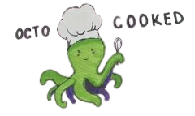
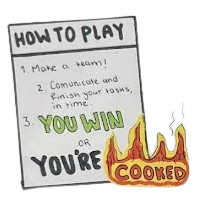
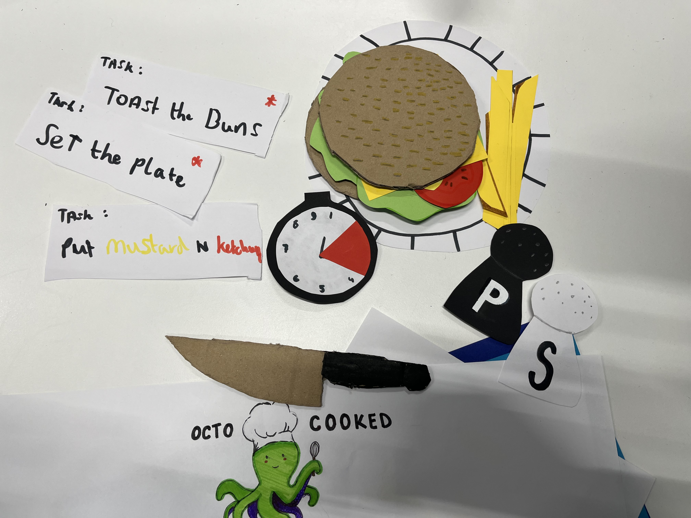

How I did it
We began with brainstorming sessions to explore game concepts requiring teamwork. Inspired by "Overcooked," we introduced a twist with an octopus character, where each tentacle represented a player. In our game, players collaborated under limited resources and time to complete tasks efficiently. Failure to do so would result in undercooked burgers, adding urgency and challenge to the gameplay.